vignettes/multibatch_brain12_tutorial.Rmd
multibatch_brain12_tutorial.RmdThis tutorial demonstrates how to use SRTpipeline (>=0.1.0) to analyze multiple spatially-resolved transcriptomics (SRT) data. We emphases how to use iSC.MEB model for spatial clustering and integration and its followed applications based on SRTProject object in the SRTpipeline package. This tutorial will cover the following tasks, which we believe will be common for many spatial analyses:
First, we load SRTpipeline.
library(SRTpipeline)
set.seed(2023)For this tutorial, we will introduce how to create a SRTProject object with multiple SRT samples using SRTpipeline that includes an introduction to common analytical workflows for multiple data batches. Here, we will be taking spatial transcriptomics dataset for human dorsolateral prefrontal cortex (DLPFC) as an example. There are three tissue slices from the various donors with 3500~4500 spots and 33538 genes that were sequenced on the 10x Visium platform. Our preprocessed data can be downloaded here, and the raw data can be found here.
Next, we download the data to the current working path for the followed analysis by the following command:
name_ID12 <- as.character(c(151507, 151669, 151673))
for (r in seq_along(name_ID12)) {
githubURL <- paste0("https://github.com/feiyoung/DR-SC.Analysis/blob/main/data/DLPFC_data/",
name_ID12[r], ".rds?raw=true")
download.file(githubURL, paste0("dlpfc_", name_ID12[r], ".rds"), mode = "wb")
}Then load to R and prepare for creating the SRTProject object.
dir_file <- "D:/LearnFiles/Research paper/ProPCA/DR-SC.Analysis/data/DLPFC_data/"
name_ID12 <- as.character(c(151507, 151669, 151673))
# dir_file <- './dlpfc_'
n_sample <- length(name_ID12)
library(Seurat)
## create count matrix list: note each component has a name, i.e., `ID151672`.
cntList <- list()
## create spatial coordinate matrix
coordList <- list()
## create metadata list
metadataList <- list()
for (r in 1:n_sample) {
# r <- 1
message("r = ", r)
id <- name_ID12[r]
dlpfc <- readRDS(paste0(dir_file, id, ".rds"))
sp_count <- dlpfc@assays@data$counts
meta.data <- data.frame(annotated_label = dlpfc$layer_guess_reordered, row = dlpfc$row, col = dlpfc$col)
row.names(meta.data) <- colnames(sp_count)
cntList[[r]] <- sp_count
metadataList[[r]] <- meta.data
coordList[[r]] <- cbind(row = dlpfc$row, col = dlpfc$col)
}
names(cntList) <- name_ID12
## create meta data for each data batches. Here we only have one data batch.
sampleMetadata <- data.frame(species = rep("Human", n_sample), tissues = rep("DLPFC", n_sample),
donor = rep(1:3, each = 1))
row.names(sampleMetadata) <- names(cntList)
## Name of this project
projectName <- "DLPFC3"We check the data by printing it. We can see there are 3500~4500 spots and 33538 genes for each data batch.
sapply(cntList, dim)## 151507 151669 151673
## [1,] 33538 33538 33538
## [2,] 4226 3661 3639Check whether each data batch has the same genes: Yes.
geneNamesList <- lapply(cntList, row.names)
shared_genes <- Reduce(intersect, geneNamesList)
length(shared_genes)## [1] 33538First, we show how to create a SRTProject object step by step.
Because the gene name is ensembl in this data, we change the genes’ ensembl name to symbols for convenience of followed analyses.
cntList <- lapply(cntList, function(x) x[shared_genes, ])
## Use eg.db database: this method is fast
symbol_name <- transferGeneNames(shared_genes, now_name = "ensembl", to_name = "symbol", species = "Human",
Method = "eg.db")
for (r in 1:n_sample) {
row.names(cntList[[r]]) <- symbol_name
}
symbol_name[1:10]## [1] "ENSG00000243485" "Fam138a" "Or4f5" "Loc100996442"
## [5] "ENSG00000239945" "ENSG00000239906" "ENSG00000241599" "ENSG00000236601"
## [9] "Or4f29" "ENSG00000235146"Next, we start creating SRTProject object. We can print the basic information of this object, including three parts. The first part have the class of this object, outputPath of data that require to output, h5filePath that save the memory-cusuming data (i.e., count, logcount, …). The second part is about the datasets basic information, such as how many data batches(sample) and the data names, sample meta data (sampleColData) and meta data for each spot (cellMetaData). The last part is about downstream analyses information that is empty when this object created.
SRTProj <- CreateSRTProject(cntList, coordList, projectName = projectName, metadataList, sampleMetadata,
min.spots = 20, min.genes = 20, force = F)
SRTProj## class: SRTProject
## outputPath: F:\Research paper\IntegrateDRcluster\AnalysisCode\SRTpipeline\vignettes\DLPFC3
## h5filePath: F:\Research paper\IntegrateDRcluster\AnalysisCode\SRTpipeline\vignettes\DLPFC3/DLPFC3.h5
## ---------Datasets basic information-----------------
## samples(3): 151507 151669 151673
## sampleColData names(4): species tissues donor NumOfSpots
## cellMetaData names(4): annotated_label row col batch
## numberOfSpots(3): 4226 3661 3639
## ---------Downstream analyses information-----------------
## Low-dimensional embeddings(0):
## Inferred cluster labels: No
## Embedding for plotting(0):What does data in a h5 file look like?
h5ls(SRTProj@projectMetadata$h5filePath)## group name otype dclass dim
## 0 / SpatialCoords H5I_DATASET INTEGER 11526 x 2
## 1 / cellMetaData H5I_DATASET COMPOUND 11526
## 2 / count H5I_GROUP
## 3 /count count_1 H5I_GROUP
## 4 /count/count_1 Dim H5I_DATASET INTEGER 2
## 5 /count/count_1 cellNames H5I_DATASET STRING 4226
## 6 /count/count_1 data H5I_DATASET FLOAT 5908955
## 7 /count/count_1 geneNames H5I_DATASET STRING 13929
## 8 /count/count_1 indices H5I_DATASET INTEGER 5908955
## 9 /count/count_1 indptr H5I_DATASET INTEGER 4227
## 10 /count count_2 H5I_GROUP
## 11 /count/count_2 Dim H5I_DATASET INTEGER 2
## 12 /count/count_2 cellNames H5I_DATASET STRING 3661
## 13 /count/count_2 data H5I_DATASET FLOAT 6533642
## 14 /count/count_2 geneNames H5I_DATASET STRING 13929
## 15 /count/count_2 indices H5I_DATASET INTEGER 6533642
## 16 /count/count_2 indptr H5I_DATASET INTEGER 3662
## 17 /count count_3 H5I_GROUP
## 18 /count/count_3 Dim H5I_DATASET INTEGER 2
## 19 /count/count_3 cellNames H5I_DATASET STRING 3639
## 20 /count/count_3 data H5I_DATASET FLOAT 7943259
## 21 /count/count_3 geneNames H5I_DATASET STRING 13929
## 22 /count/count_3 indices H5I_DATASET INTEGER 7943259
## 23 /count/count_3 indptr H5I_DATASET INTEGER 3640
## 24 / sampleMetadata H5I_DATASET COMPOUND 3
## 25 / samplenames H5I_DATASET STRING 3After removing unwanted cells and genes from the dataset, the next step is to normalize the data. To save RAM memory, normalized values are stored in disk as a h5file.
SRTProj <- normalizeSRT(SRTProj, normalization.method = "LogNormalize")We next select a subset of genes that exhibit high spot-to-spot variation in the dataset (i.e, they are highly expressed in some spots, and lowly expressed in others). It has been found that focusing on these genes in downstream analysis helps to highlight biological signal in single-cell datasets here.
Then we choose variable features. The default number of variable features is 2,000, and users can change it using argument nfeatures. The default type is highly variable genes (HVGs), but users can use spatially variable genes by seting type='SVGs', then SPARK-X will be used to choose SVGs. ## Choose highly variable features We can also directly use FindVariableFeatures() to choose the top highly variable genes (HVGs). We found the performance of using SVGs or HVGs has no significant difference for the downstream analyses, such as dimension reduction and spatial clustering.
SRTProj <- selectVariableFeatures(SRTProj, nfeatures = 2000, type = "HVGs", method = "vst")
SRTProj## class: SRTProject
## outputPath: F:\Research paper\IntegrateDRcluster\AnalysisCode\SRTpipeline\vignettes\DLPFC3
## h5filePath: F:\Research paper\IntegrateDRcluster\AnalysisCode\SRTpipeline\vignettes\DLPFC3/DLPFC3.h5
## ---------Datasets basic information-----------------
## samples(3): 151507 151669 151673
## sampleColData names(4): species tissues donor NumOfSpots
## cellMetaData names(4): annotated_label row col batch
## numberOfSpots(3): 4226 3661 3639
## ---------Downstream analyses information-----------------
## Variable features: 2000
## Low-dimensional embeddings(0):
## Inferred cluster labels: No
## Embedding for plotting(0):We first applied the SPARK-X to choose the top spatially variable genes (SVGs). SPARK-X is embeded in the DR.SC R package and is implement in the FindSVGs() function. By default, we return 2,000 genes per dataset. These will be used in downstream analysis, like probabilistic embeddings and spatial clustering. To further speed up the computation, we first use FindVariableFeatures() to select 5,000 highly variable genes, then use SPARK-X to choose top SVGs in the implementation of FindSVGs() function. The selected SVGs are saved in dlpfc@assays$RNA@var.features.
# SRTProj <- selectVariableFeatures(SRTProj,nfeatures = 2000, type = 'SVGs', method='SPARK-X')Calculate the adjcence matrix
## Obtain adjacence matrix
SRTProj <- AddAdj(SRTProj, platform = "Visium")Visualize
selectFeatures <- row.names(SRTProj@geneMetaData[which(SRTProj@geneMetaData$`isVGs#combine`), ])[1:2]
EachExprSpaHeatMap(SRTProj, batch = 1:2, features = selectFeatures, title_name = T)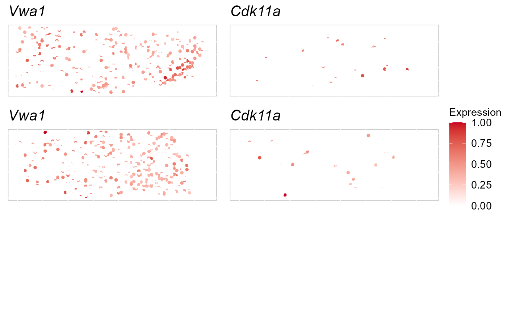
PCA is the most popular dimension reduction technique in single cell RNA sequencing (scRNA-seq) data and SRT data because of its simplicity, computational efficiency, and relatively comparable performance. SRTpipeline provided three versions of PCA: standard PCA (PCA), approximated PCA (APCA), and weighted PCA (WPCA) by the function AddPCA with default version as APCA for fastest computation. The 15-dimensional PCs are extracted by default, and users can use their own values.
After running AddPCA, we would see the output of SRTProj includes PCA in the Low-dimensional embeddings field.
SRTProj <- AddPCA(SRTProj, Method = "PCA")
# weighted PCA SRTProj <- AddPCA(SRTProj, Method='WPCA')
SRTProj## class: SRTProject
## outputPath: F:\Research paper\IntegrateDRcluster\AnalysisCode\SRTpipeline\vignettes\DLPFC3
## h5filePath: F:\Research paper\IntegrateDRcluster\AnalysisCode\SRTpipeline\vignettes\DLPFC3/DLPFC3.h5
## ---------Datasets basic information-----------------
## samples(3): 151507 151669 151673
## sampleColData names(4): species tissues donor NumOfSpots
## cellMetaData names(4): annotated_label row col batch
## numberOfSpots(3): 4226 3661 3639
## ---------Downstream analyses information-----------------
## Variable features: 2000
## Low-dimensional embeddings(1): PCA
## Inferred cluster labels: No
## Embedding for plotting(0):iSC.MEB model achieves joint clustering and alignment by integration analysis for multiple samples. Some SRT clustering methods use Markov random field to model clusters of spots. These approaches work extremely well and are a standard practice in scRNA-seq. For this reason, SRTpipeline uses existing state-of-the-art clustering methods from SRT packages for clustering.
We have had the most success using the graph clustering approach implemented by Seurat. In ArchR, clustering is performed using the addClusters() function which permits additional clustering parameters to be passed to the SC.MEB::SC.MEB() function via. In our hands, clustering using Seurat::FindClusters() is deterministic, meaning that the exact same input will always result in the exact same output.
SRTProj <- Integrate_iSCMEB(SRTProj, K = 7, reduction = "PCA", init.start = 5)## fitting ...
##
|
| | 0%
|
|=================================== | 50%
|
|======================================================================| 100%
## fitting ...
##
|
| | 0%
|
|=================================== | 50%
|
|======================================================================| 100%
## fitting ...
##
|
| | 0%
|
|=================================== | 50%
|
|======================================================================| 100%
## fitting ...
##
|
| | 0%
|
|=================================== | 50%
|
|======================================================================| 100%
## fitting ...
##
|
| | 0%
|
|=================================== | 50%
|
|======================================================================| 100%
## Finish variable initialization
## K = 7, iter = 2, loglik= -128198.503203, dloglik=0.999940
## K = 7, iter = 3, loglik= -115952.203556, dloglik=0.095526
## K = 7, iter = 4, loglik= -108543.160651, dloglik=0.063897
## K = 7, iter = 5, loglik= -102090.438705, dloglik=0.059448
## K = 7, iter = 6, loglik= -98110.071418, dloglik=0.038989
## K = 7, iter = 7, loglik= -95115.651558, dloglik=0.030521
## K = 7, iter = 8, loglik= -92827.787750, dloglik=0.024053
## K = 7, iter = 9, loglik= -91087.896591, dloglik=0.018743
## K = 7, iter = 10, loglik= -89750.370517, dloglik=0.014684
## K = 7, iter = 11, loglik= -88721.667222, dloglik=0.011462
## K = 7, iter = 12, loglik= -87938.954967, dloglik=0.008822
## K = 7, iter = 13, loglik= -87343.710325, dloglik=0.006769
## K = 7, iter = 14, loglik= -86773.371863, dloglik=0.006530
## K = 7, iter = 15, loglik= -86478.920339, dloglik=0.003393
## K = 7, iter = 16, loglik= -86175.174652, dloglik=0.003512
## K = 7, iter = 17, loglik= -85908.423991, dloglik=0.003095
## K = 7, iter = 18, loglik= -85727.649644, dloglik=0.002104
## K = 7, iter = 19, loglik= -85542.893353, dloglik=0.002155
## K = 7, iter = 20, loglik= -85389.825434, dloglik=0.001789
## K = 7, iter = 21, loglik= -85236.504733, dloglik=0.001796
## K = 7, iter = 22, loglik= -85110.273185, dloglik=0.001481
## K = 7, iter = 23, loglik= -84984.569353, dloglik=0.001477
## K = 7, iter = 24, loglik= -84881.239797, dloglik=0.001216
## K = 7, iter = 25, loglik= -84803.291573, dloglik=0.000918
SRTProj## class: SRTProject
## outputPath: F:\Research paper\IntegrateDRcluster\AnalysisCode\SRTpipeline\vignettes\DLPFC3
## h5filePath: F:\Research paper\IntegrateDRcluster\AnalysisCode\SRTpipeline\vignettes\DLPFC3/DLPFC3.h5
## ---------Datasets basic information-----------------
## samples(3): 151507 151669 151673
## sampleColData names(4): species tissues donor NumOfSpots
## cellMetaData names(4): annotated_label row col batch
## numberOfSpots(3): 4226 3661 3639
## ---------Downstream analyses information-----------------
## Variable features: 2000
## Low-dimensional embeddings(3): PCA microEnv.iSC.MEB aligned.iSC.MEB
## Inferred cluster labels: Yes
## Embedding for plotting(0):The estimated embeddings are saved in the slotreductions$DR.SC and the spatial clusters are saved in the slot clusters$DR.SC.
SRTProj@reductions## List of length 3
## names(3): PCA microEnv.iSC.MEB aligned.iSC.MEB
table(SRTProj@clusters)##
## 1 2 3 4 5 6 7
## 2659 2949 2040 467 1039 1727 645To run tSNE in SRTpipeline we use the AddTSNE() function:
SRTProj <- AddTSNE(SRTProj, n_comp = 2, reduction = "aligned.iSC.MEB")The reduction tells AddTSNE uses specified reduction in the SRTProj@reductions slot.
To plot the two-dimensional tSNE results, we use the EmbedPlot() function and pass the name of the UMAP embedding we just generated (“UMAP”). We can tell SRTpipeline how to color the spots by using a combination of cols which tells ArchR which matrix to use to find the specified metadata column provided to name.
DR-SC model can offer good data visualization. We visualized the inferred embeddings for biological effects between domain types using two components from tSNE. The tSNE plot showed the domain clusters were well segregated.
p_tsne2_cluster <- EmbedPlot(SRTProj, item = "cluster", plotEmbeddings = "tSNE", cols = chooseColors(n_colors = 7),
legend.position = "bottom", pt_size = 0.2)
p_tsne2_batch <- EmbedPlot(SRTProj, item = "batch", plotEmbeddings = "tSNE", cols = chooseColors(palettes_name = "Light 13",
n_colors = 12), legend.position = "bottom", pt_size = 0.2)
drawFigs(list(p_tsne2_cluster, p_tsne2_batch), layout.dim = c(1, 2), legend.position = "bottom")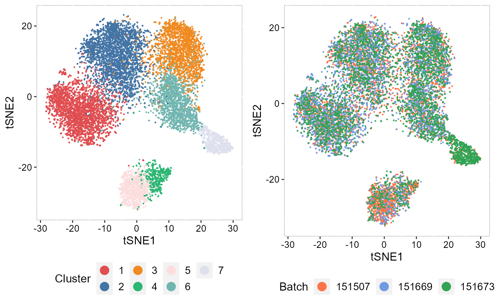 Next, we summarized the inferred embeddings for biological effects between spatial domain types (the slot reductions) using three components from either tSNE or UMAP and visualized the resulting tSNE/UMAP components with red/green/blue (RGB) colors in the RGB plot.
The resulting RGB plots from DR-SC showed the laminar organization of the human cerebral cortex, and DR-SC provided smooth transitions across neighboring spots and spatial domains.
SRTProj <- AddTSNE(SRTProj, n_comp = 3, reduction = "aligned.iSC.MEB")
p_tsne3 <- EachRGBSpaHeatMap(SRTProj, plot_type = "tSNE", layout.dim = c(1, 3), pt_size = 2, title_name = "tSNE RGB plot: ")
p_tsne3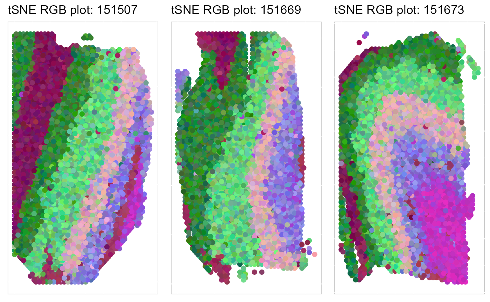
To run UMAP in SRTpipeline we use the AddUMAP() function. Frist, we evaluate the two-dimensional UMAPs.
SRTProj <- AddUMAP(SRTProj, n_comp = 2, reduction = "aligned.iSC.MEB")
p_umap2 <- EmbedPlot(SRTProj, item = "cluster", plotEmbeddings = "UMAP", cols = chooseColors(n_colors = 7),
legend.position = "right")
p_umap2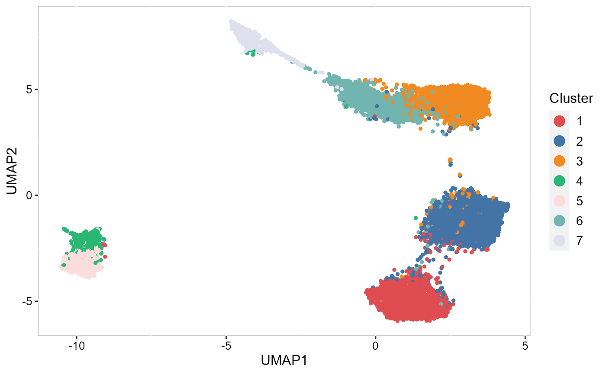 Then, we evaluate the three-dimensional UMAPs.
SRTProj <- AddUMAP(SRTProj, n_comp = 3, reduction = "aligned.iSC.MEB")
p_umap3 <- EachRGBSpaHeatMap(SRTProj, plot_type = "UMAP", layout.dim = c(1, 3), pt_size = 2, title_name = "UMAP RGB plot: ")
p_umap3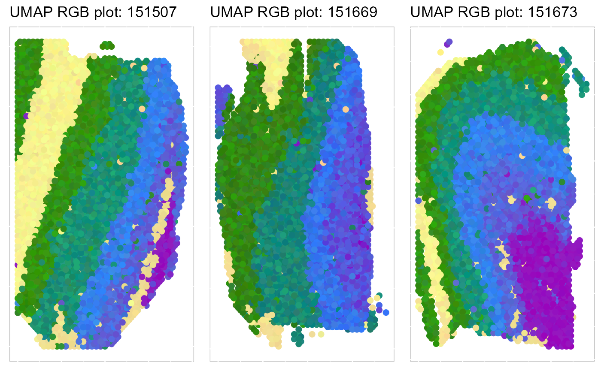
To save the plot, we can use write_fig() function.
write_fig(p_umap3, filename = "iSCMEB_p_umap3.png", width = 14, height = 11)Except for the embedding plots, SRTpipeline also provides a variaty of visualization functions. First, we visualize the spatial distribution of cluster labels that shows the layer structure for all 12 data batches.
## choose colors to function chooseColors
cols <- chooseColors(n_colors = 7)
p12 <- EachClusterSpaHeatMap(SRTProj, cols = cols, legend.position = "bottom", base_size = 12, pt_size = 0.5,
layout.dim = c(1, 3), nrow.legend = 1)
p12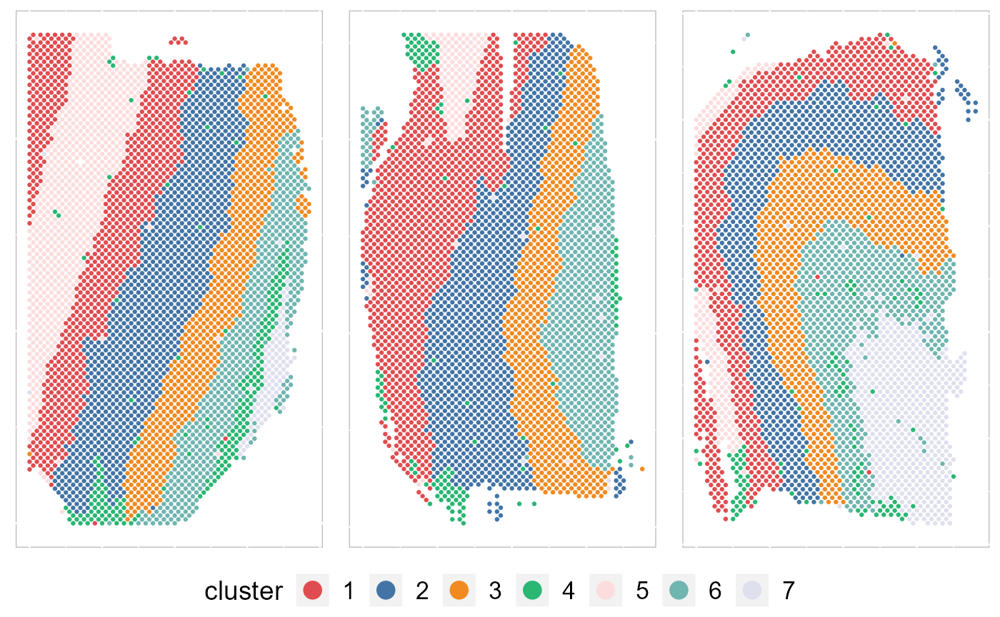
# remove the border EachClusterSpaHeatMap(SRTProj, cols=cols,
# legend.position='right',base_size=16, border_col='white') write_fig(p12, filename =
# 'iSCMEB_p12.png',width =14, height =11)By setting combine =FALSE, this function will return a list of ggplot2 objects, thus user can revise each plot.
pList <- EachClusterSpaHeatMap(SRTProj, cols = cols, legend.position = "bottom", base_size = 12,
pt_size = 0.5, layout.dim = c(1, 3), nrow.legend = 1, combine = FALSE)
## Calculate the ARIs and NMIs for each data batch
annotateList <- vec2list(SRTProj@cellMetaData$annotated_label, nvec = SRTProj@sampleMetaData$NumOfSpots)
clusterList <- vec2list(SRTProj@clusters, nvec = SRTProj@sampleMetaData$NumOfSpots)
ARI_vec <- sapply(1:length(annotateList), function(r) cluster_metric(annotateList[[r]], clusterList[[r]]))
ARI_vec## [1] 0.5097505 0.3779750 0.5429999We plotted the heatmap of Pearson’s correlation coefcients of the estimated embeddings among the detected domains shows the good separation of the estimated embeddings across domains and the correlations between deeper layers were high, e.g., there were high correlations between domain 2 and 3, while correlations among the separated layers were low, i.e., domain 1 and 4.
p_cc <- CCHeatMap(SRTProj, reduction = "aligned.iSC.MEB", grp_color = cols)
p_cc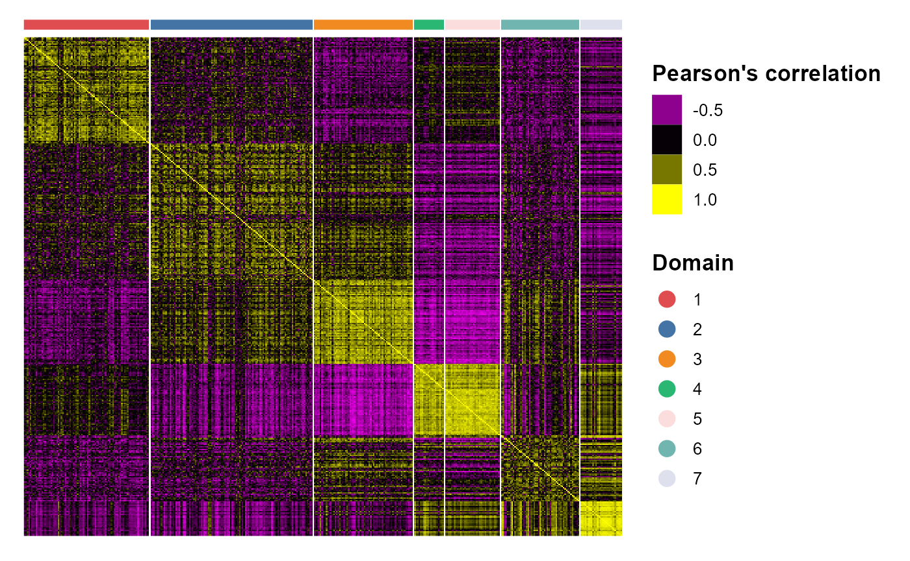
After adding the quantities for data visualization, the SRTProject object will have more information in the downstream analyses information. Now, we print this SRTProject object to check it. We observed two components added in the slot plotEmbeddings (Embeddings for plotting): tSNE, tSNE3, UMAP and UMAP3.
SRTProj## class: SRTProject
## outputPath: F:\Research paper\IntegrateDRcluster\AnalysisCode\SRTpipeline\vignettes\DLPFC3
## h5filePath: F:\Research paper\IntegrateDRcluster\AnalysisCode\SRTpipeline\vignettes\DLPFC3/DLPFC3.h5
## ---------Datasets basic information-----------------
## samples(3): 151507 151669 151673
## sampleColData names(4): species tissues donor NumOfSpots
## cellMetaData names(4): annotated_label row col batch
## numberOfSpots(3): 4226 3661 3639
## ---------Downstream analyses information-----------------
## Variable features: 2000
## Low-dimensional embeddings(3): PCA microEnv.iSC.MEB aligned.iSC.MEB
## Inferred cluster labels: Yes
## Embedding for plotting(4): tSNE tSNE3 UMAP UMAP3After obtain the spatial cluster labels using a clustering model, we can perform differentially expression analysis.
speInt <- getIntegratedData(SRTProj, Method = "iSC.MEB", species = "Human")First, we detect the DE genes for cluster 3.
## DataFrame with 1 row and 5 columns
## p_val avg_log2FC pct.1 pct.2 p_val_adj
## <numeric> <numeric> <numeric> <numeric> <numeric>
## Pcp4 9.38956e-173 0.617137 0.776 0.691 1.87791e-169We perform differential expression analysis for all clusters by using FindAllMarkers() function, then the DE genes’ information is saved in a data.frame object dat_degs.
dat_degs <- FindAllDEGs(speInt)
dat_degs## DataFrame with 327 rows and 7 columns
## p_val avg_log2FC pct.1 pct.2 p_val_adj cluster
## <numeric> <numeric> <numeric> <numeric> <numeric> <factor>
## Mbp 0.00000e+00 -0.429159 0.921 0.944 0.00000e+00 1
## Hpcal1 1.40823e-301 0.577412 0.898 0.672 2.81646e-298 1
## Enc1 4.29637e-261 0.272601 0.991 0.968 8.59274e-258 1
## Plp1 7.43878e-228 -0.473909 0.888 0.909 1.48776e-224 1
## Hopx 3.57081e-187 0.386511 0.924 0.814 7.14162e-184 1
## ... ... ... ... ... ... ...
## Evi2a 0.00201784 0.670291 0.527 0.582 1 7
## Cox7a1 0.00313152 -0.322798 0.952 0.766 1 7
## Plekhg3 0.00498131 0.463233 0.440 0.541 1 7
## Prr18 0.00542455 0.687814 0.505 0.624 1 7
## Gldn 0.00764878 0.681893 0.501 0.594 1 7
## gene
## <character>
## Mbp Mbp
## Hpcal1 Hpcal1
## Enc1 Enc1
## Plp1 Plp1
## Hopx Hopx
## ... ...
## Evi2a Evi2a
## Cox7a1 Cox7a1
## Plekhg3 Plekhg3
## Prr18 Prr18
## Gldn GldnWe identify the significant DE genes by two criteria: (a) adjustd p-value less than 0.01 and (b) average log fold change greater than 0.4.
degs_sig <- subset(dat_degs, p_val_adj < 0.01 & avg_log2FC > 0.25)
degs_sig## DataFrame with 222 rows and 7 columns
## p_val avg_log2FC pct.1 pct.2 p_val_adj cluster
## <numeric> <numeric> <numeric> <numeric> <numeric> <factor>
## Hpcal1 1.40823e-301 0.577412 0.898 0.672 2.81646e-298 1
## Enc1 4.29637e-261 0.272601 0.991 0.968 8.59274e-258 1
## Hopx 3.57081e-187 0.386511 0.924 0.814 7.14162e-184 1
## Serpine2 6.09920e-72 0.295167 0.781 0.655 1.21984e-68 1
## Cartpt 1.62123e-59 0.388721 0.643 0.533 3.24247e-56 1
## ... ... ... ... ... ... ...
## Gjb1 5.08479e-07 0.614240 0.422 0.612 0.00101696 7
## Usp54 6.70383e-07 0.404278 0.546 0.519 0.00134077 7
## Sox8 1.42277e-06 0.676708 0.557 0.627 0.00284554 7
## Rffl 1.62039e-06 0.343141 0.557 0.497 0.00324077 7
## Ugt8 4.80698e-06 0.757972 0.547 0.625 0.00961396 7
## gene
## <character>
## Hpcal1 Hpcal1
## Enc1 Enc1
## Hopx Hopx
## Serpine2 Serpine2
## Cartpt Cartpt
## ... ...
## Gjb1 Gjb1
## Usp54 Usp54
## Sox8 Sox8
## Rffl Rffl
## Ugt8 Ugt8In the following, we perform gene set enrichment analysis for the DE genes of each Domain identified by DR-SC model using R package gprofiler2.
library(gprofiler2)
termList <- list()
for (k in 1:7) {
# k <- 1
cat("k = ", k, "\n")
dat_degs_sub <- subset(degs_sig, cluster == k)
que1 <- dat_degs_sub$gene
gostres <- gost(query = que1, organism = "hsapiens", correction_method = "fdr")
termList[[k]] <- gostres
}## k = 1
## k = 2
## k = 3
## k = 4
## k = 5
## k = 6
## k = 7
head(termList[[1]]$result)## query significant p_value term_size query_size intersection_size
## 1 query_1 TRUE 1.010518e-05 753 8 6
## 2 query_1 TRUE 1.010518e-05 729 8 6
## 3 query_1 TRUE 1.010518e-05 721 8 6
## 4 query_1 TRUE 1.010518e-05 721 8 6
## 5 query_1 TRUE 9.429021e-05 208 8 4
## 6 query_1 TRUE 6.917997e-04 104 8 3
## precision recall term_id source term_name
## 1 0.750 0.007968127 GO:0099536 GO:BP synaptic signaling
## 2 0.750 0.008230453 GO:0099537 GO:BP trans-synaptic signaling
## 3 0.750 0.008321775 GO:0007268 GO:BP chemical synaptic transmission
## 4 0.750 0.008321775 GO:0098916 GO:BP anterograde trans-synaptic signaling
## 5 0.500 0.019230769 GO:0048167 GO:BP regulation of synaptic plasticity
## 6 0.375 0.028846154 GO:0060291 GO:BP long-term synaptic potentiation
## effective_domain_size source_order parents
## 1 21092 22305 GO:0007267
## 2 21092 22306 GO:0099536
## 3 21092 3155 GO:0098916
## 4 21092 22136 GO:0099537
## 5 21092 14572 GO:0050804, GO:0065008
## 6 21092 17047 GO:0048167, GO:0050806To understand the functions of the identified spatial domains by DR-SC model, we compare the top significant biological process (BP) pathways in GO database for the DE genes from Domain 1 and 2. Here, we only show to visualize the significant BP pathways and users can explore the other databases such as KEGG and HPA.
## Most commonly used databases
source_set <- c("GO:BP", "GO:CC", "GO:MF", "KEGG", "HPA")
cols <- c("steelblue3", "goldenrod", "brown3", "#f98866", "#CE6DBD")
## Here, we show GO:BP
source1 <- "GO:BP"
ss <- which(source_set == source1)
ntop = 5
names(cols) <- source_set
pList_enrich <- list()
for (ii in 1:5) {
## ii <- 3
message("ii=", ii)
gostres2 <- termList[[ii]]
if (!is.null(gostres2$result)) {
dat1 <- subset(gostres2$result, term_size < 500)
dat1 <- get_top_pathway(dat1, ntop = ntop, source_set = source1)
dat1 <- dat1[complete.cases(dat1), ]
dat1$nlog10P <- -log10(dat1$p_value)
pList_enrich[[ii]] <- barPlot_enrich(dat1[order(dat1$nlog10P), ], source = "source", "term_name",
"nlog10P", cols = cols[source_set[ss]], base_size = 14) + ylab("-log10(p-adj)") + xlab("Biological terms") +
ggtitle(paste0("Domain", ii))
}
}
drawFigs(pList_enrich[c(1, 2)], layout.dim = c(2, 1), common.legend = T, align = "hv")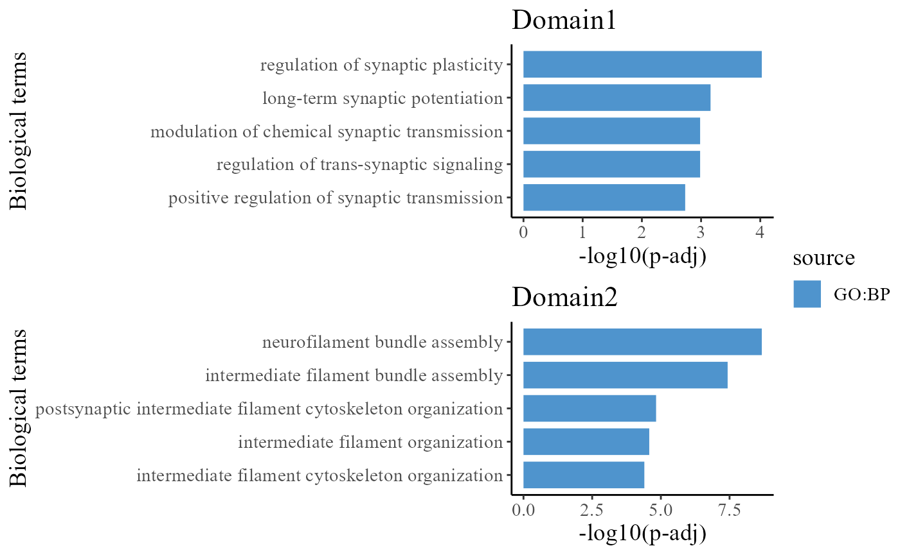
We take out the top DE genes for each cluster for visualization.
library(dplyr)
n <- 5
dat_degs %>%
as.data.frame %>%
group_by(cluster) %>%
top_n(n = n, wt = avg_log2FC) -> topGene
topGene## # A tibble: 35 x 7
## # Groups: cluster [7]
## p_val avg_log2FC pct.1 pct.2 p_val_adj cluster gene
## <dbl> <dbl> <dbl> <dbl> <dbl> <fct> <chr>
## 1 1.41e-301 0.577 0.898 0.672 2.82e-298 1 Hpcal1
## 2 3.57e-187 0.387 0.924 0.814 7.14e-184 1 Hopx
## 3 6.10e- 72 0.295 0.781 0.655 1.22e- 68 1 Serpine2
## 4 1.62e- 59 0.389 0.643 0.533 3.24e- 56 1 Cartpt
## 5 2.92e- 48 0.304 0.659 0.569 5.84e- 45 1 Sowaha
## 6 3.51e-194 0.268 0.977 0.957 7.03e-191 2 Nefl
## 7 1.04e-145 0.365 0.871 0.825 2.07e-142 2 Nefm
## 8 2.97e- 74 0.267 0.852 0.831 5.95e- 71 2 Sncg
## 9 7.35e- 59 0.292 0.779 0.76 1.47e- 55 2 Scn1b
## 10 7.22e- 14 0.278 0.619 0.634 1.44e- 10 2 Nefh
## # ... with 25 more rowsWe visualize the DE genes for each cluster group by gene-by-cell heatmap using the GCHeatMap() function.
cols_cluster <- chooseColors(n_colors = 7)
p1 <- GCHeatMap(speInt, features = topGene$gene, grp_color = cols_cluster, y_text_size = 9)
p1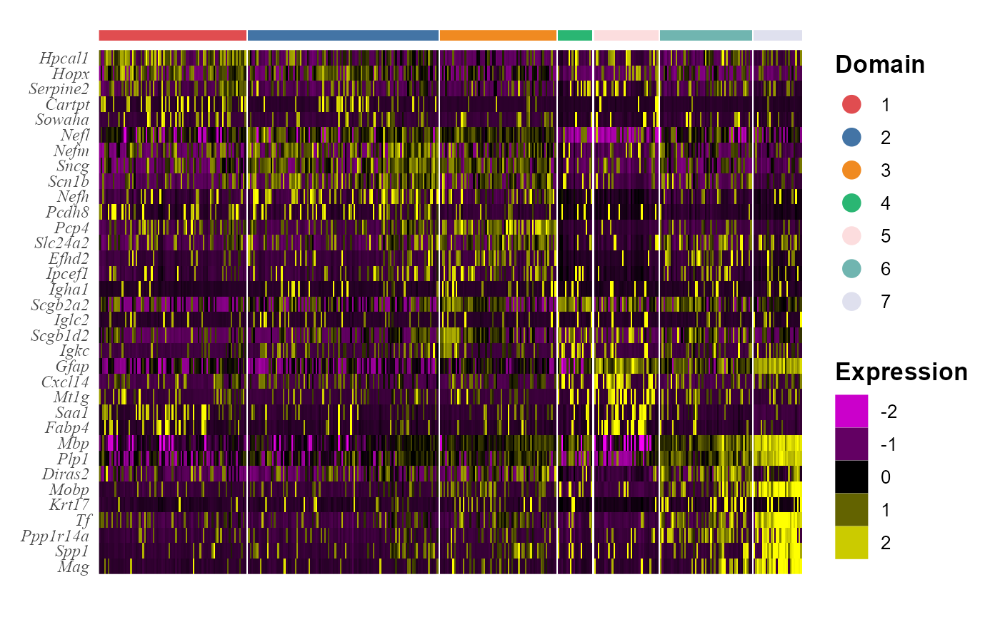
Next, we performed trajectory inference using the embeddings and domain labels estimated by DR-SC model.
speInt <- AddTrajectory(speInt, reduction = "aligned.iSC.MEB")
EmbedPlot(speInt, plotEmbeddings = "tSNE", colour_by = "PT")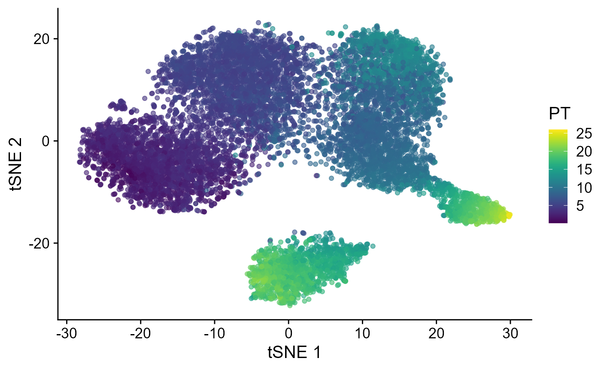
Visualize the inferred pseudotime on the spatial coordinates for each data batch.
p_spa <- EachEmbedPlot(speInt, reduction = "Coord", colour_by = "PT", layout.dim = c(1, 3), add_border_box = T,
no_axis = TRUE)
p_spa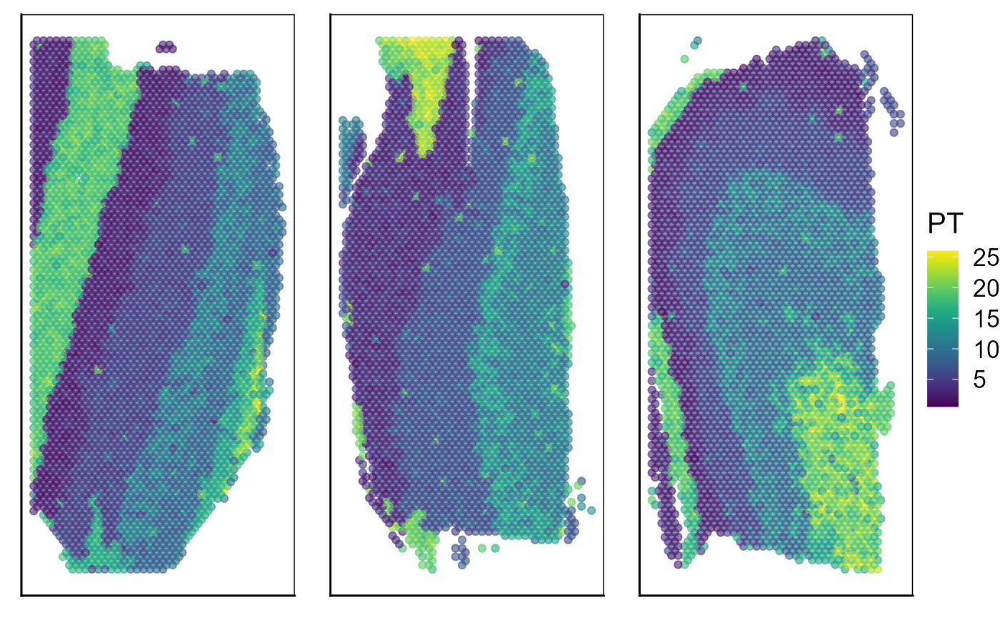
# save(SRTProj, file=paste0(SRTProj@projectMetadata$outputPath,'/SRTProj.rds'))
# load('F://Research
# paper//IntegrateDRcluster//AnalysisCode//SRTpipeline//vignettes//DLPFC12V2//SRTProj.rds')Session Info
## R version 4.1.2 (2021-11-01)
## Platform: x86_64-w64-mingw32/x64 (64-bit)
## Running under: Windows 10 x64 (build 22621)
##
## Matrix products: default
##
## locale:
## [1] LC_COLLATE=Chinese (Simplified)_China.936
## [2] LC_CTYPE=Chinese (Simplified)_China.936
## [3] LC_MONETARY=Chinese (Simplified)_China.936
## [4] LC_NUMERIC=C
## [5] LC_TIME=Chinese (Simplified)_China.936
##
## attached base packages:
## [1] parallel stats4 stats graphics grDevices utils datasets
## [8] methods base
##
## other attached packages:
## [1] scater_1.25.1 scuttle_1.4.0
## [3] slingshot_2.2.0 TrajectoryUtils_1.2.0
## [5] princurve_2.1.6 gprofiler2_0.2.1
## [7] bigalgebra_1.1.0 bigmemory_4.5.36
## [9] SpatialExperiment_1.4.0 SingleCellExperiment_1.16.0
## [11] SummarizedExperiment_1.24.0 GenomicRanges_1.46.1
## [13] GenomeInfoDb_1.30.1 MatrixGenerics_1.6.0
## [15] matrixStats_0.62.0 aricode_1.0.0
## [17] mclust_5.4.10 colorspace_2.0-3
## [19] iSC.MEB_1.0.1 gtools_3.9.2.2
## [21] DR.SC_3.1 spatstat.geom_2.4-0
## [23] spatstat.data_3.0-0 ggplot2_3.3.6
## [25] dplyr_1.0.9 Matrix_1.4-0
## [27] hdf5r_1.3.5 ff_4.0.7
## [29] bit_4.0.4 rhdf5_2.38.0
## [31] org.Hs.eg.db_3.14.0 AnnotationDbi_1.56.2
## [33] IRanges_2.28.0 S4Vectors_0.32.3
## [35] Biobase_2.54.0 BiocGenerics_0.40.0
## [37] sp_1.5-0 SeuratObject_4.1.0
## [39] Seurat_4.1.1 SRTpipeline_0.1.1
##
## loaded via a namespace (and not attached):
## [1] scattermore_0.8 ggthemes_4.2.4
## [3] R.methodsS3_1.8.1 GiRaF_1.0.1
## [5] ragg_1.2.2 tidyr_1.2.0
## [7] bit64_4.0.5 knitr_1.37
## [9] R.utils_2.11.0 irlba_2.3.5
## [11] DelayedArray_0.20.0 data.table_1.14.2
## [13] rpart_4.1.16 KEGGREST_1.34.0
## [15] RCurl_1.98-1.6 generics_0.1.2
## [17] ScaledMatrix_1.2.0 cowplot_1.1.1
## [19] RSQLite_2.2.10 RANN_2.6.1
## [21] future_1.26.1 httpuv_1.6.5
## [23] assertthat_0.2.1 viridis_0.6.2
## [25] xfun_0.29 jquerylib_0.1.4
## [27] evaluate_0.15 promises_1.2.0.1
## [29] fansi_1.0.3 igraph_1.3.5
## [31] DBI_1.1.2 htmlwidgets_1.5.4
## [33] purrr_0.3.4 ellipsis_0.3.2
## [35] RSpectra_0.16-1 ggpubr_0.4.0
## [37] backports_1.4.1 deldir_1.0-6
## [39] sparseMatrixStats_1.6.0 vctrs_0.4.1
## [41] ROCR_1.0-11 abind_1.4-5
## [43] cachem_1.0.6 withr_2.5.0
## [45] PRECAST_1.4 progressr_0.10.1
## [47] sctransform_0.3.3 goftest_1.2-3
## [49] cluster_2.1.2 lazyeval_0.2.2
## [51] crayon_1.5.1 SpatialAnno_1.0.0
## [53] edgeR_3.36.0 pkgconfig_2.0.3
## [55] labeling_0.4.2 nlme_3.1-155
## [57] vipor_0.4.5 rlang_1.0.2
## [59] globals_0.15.0 lifecycle_1.0.1
## [61] miniUI_0.1.1.1 bigmemory.sri_0.1.3
## [63] rsvd_1.0.5 rprojroot_2.0.3
## [65] polyclip_1.10-0 lmtest_0.9-40
## [67] SC.MEB_1.1 carData_3.0-5
## [69] Rhdf5lib_1.16.0 zoo_1.8-10
## [71] beeswarm_0.4.0 ggridges_0.5.3
## [73] rjson_0.2.21 png_0.1-7
## [75] viridisLite_0.4.0 bitops_1.0-7
## [77] R.oo_1.24.0 KernSmooth_2.23-20
## [79] rhdf5filters_1.6.0 Biostrings_2.62.0
## [81] blob_1.2.2 DelayedMatrixStats_1.16.0
## [83] stringr_1.4.0 parallelly_1.32.0
## [85] spatstat.random_2.2-0 rstatix_0.7.0
## [87] ggsignif_0.6.3 beachmat_2.10.0
## [89] scales_1.2.0 memoise_2.0.1
## [91] magrittr_2.0.3 plyr_1.8.7
## [93] ica_1.0-2 zlibbioc_1.40.0
## [95] compiler_4.1.2 dqrng_0.3.0
## [97] RColorBrewer_1.1-3 fitdistrplus_1.1-8
## [99] cli_3.2.0 XVector_0.34.0
## [101] listenv_0.8.0 patchwork_1.1.1
## [103] pbapply_1.5-0 formatR_1.11
## [105] MASS_7.3-55 mgcv_1.8-39
## [107] tidyselect_1.1.2 stringi_1.7.6
## [109] textshaping_0.3.6 highr_0.9
## [111] yaml_2.3.6 locfit_1.5-9.4
## [113] BiocSingular_1.10.0 ggrepel_0.9.1
## [115] grid_4.1.2 sass_0.4.1
## [117] tools_4.1.2 future.apply_1.9.0
## [119] rstudioapi_0.13 gridExtra_2.3
## [121] farver_2.1.0 Rtsne_0.16
## [123] DropletUtils_1.14.2 digest_0.6.29
## [125] rgeos_0.5-9 shiny_1.7.1
## [127] Rcpp_1.0.10 car_3.0-12
## [129] broom_0.7.12 later_1.3.0
## [131] RcppAnnoy_0.0.19 httr_1.4.3
## [133] fs_1.5.2 tensor_1.5
## [135] reticulate_1.25 splines_4.1.2
## [137] uwot_0.1.11 spatstat.utils_3.0-1
## [139] pkgdown_2.0.6 plotly_4.10.0
## [141] systemfonts_1.0.4 xtable_1.8-4
## [143] jsonlite_1.8.0 R6_2.5.1
## [145] pillar_1.7.0 htmltools_0.5.2
## [147] mime_0.12 glue_1.6.2
## [149] fastmap_1.1.0 BiocParallel_1.28.3
## [151] BiocNeighbors_1.12.0 codetools_0.2-18
## [153] utf8_1.2.2 lattice_0.20-45
## [155] bslib_0.3.1 spatstat.sparse_2.1-1
## [157] tibble_3.1.7 ggbeeswarm_0.6.0
## [159] leiden_0.4.2 magick_2.7.3
## [161] limma_3.50.1 survival_3.2-13
## [163] CompQuadForm_1.4.3 rmarkdown_2.11
## [165] desc_1.4.0 munsell_0.5.0
## [167] GenomeInfoDbData_1.2.7 HDF5Array_1.22.1
## [169] reshape2_1.4.4 gtable_0.3.0
## [171] spatstat.core_2.4-4